MeVReg — Notice d'utilisation
Traitement des données des TP de physique-chimie · version {{version}}
1. À quoi sert MeVReg ?
MeVReg sert à exploiter les mesures d'un TP :
- les saisir dans un tableur, ou les importer d'un fichier ;
- calculer d'autres grandeurs avec des formules (vitesse, énergie…) ;
- les tracer dans des graphes, avec leurs incertitudes ;
- modéliser une courbe (droite, parabole, exponentielle…) et lire les paramètres du modèle, avec leur incertitude ;
- repérer l'équivalence d'un dosage (méthode des tangentes) ;
- enregistrer le travail, et faire un compte rendu en PDF.
Chaque colonne du tableur est une grandeur : un nom (t,
U, v_x…), une unité et une liste de valeurs. Les interprétations restent
votre travail.
2. La fenêtre

- 1Les menus : Fichier (ouvrir, enregistrer, importer, exporter, compte rendu), Édition (annuler, rétablir, préférences), Données, Graphes, Analyse (modélisation, statistiques, dérivée, méthode des tangentes…), Python, Fenêtres et Aide.
- 2Les fenêtres de travail : Grandeurs, Tableur (un nouveau tableur), Graphe (un nouveau graphe) et Python (un nouveau script).
- 3Thème et langue : le soleil (thème clair) ou la lune (thème sombre) ; un clic passe à l'autre thème. Le drapeau rappelle que MeVReg n'existe pour l'instant qu'en français.
- 4La fenêtre Grandeurs : toutes les grandeurs du document, avec leur unité et leur nombre de valeurs. Le bouton ⋯ d'une grandeur ouvre son menu. L'onglet Calculs contient les paramètres et les formules.
- 5Le tableur et ses boutons : nouvelle grandeur (Mesure, Calculée), grandeur déjà créée (Grandeur ▾), Remplir…, lignes, import et export (CSV, PDF ▾).
- 6La barre de titre de chaque fenêtre : le bouton Détacher (une flèche qui sort d'un carré) la met à part, ✕ la cache ou la ferme (partie 12).
- 7Les outils du graphe : réticule, zoom, déplacer la vue, glisser les points, plage, échelle automatique, plusieurs graphes, Modéliser, export et Réglages.
- 8Le graphe, ici avec un modèle (courbe rouge).
- 9Barre d'état : à gauche, ce qui vient de se passer (en vert, une réussite ; en orange, un point à vérifier ; en rouge, une erreur) ; à droite, le fichier, le titre du TP et le nombre de grandeurs.
Les bulles d'aide. Laissez la souris un instant sur un bouton : une bulle dit ce qu'il fait. Les textes gris des fenêtres disent quoi faire.
3. Commencer

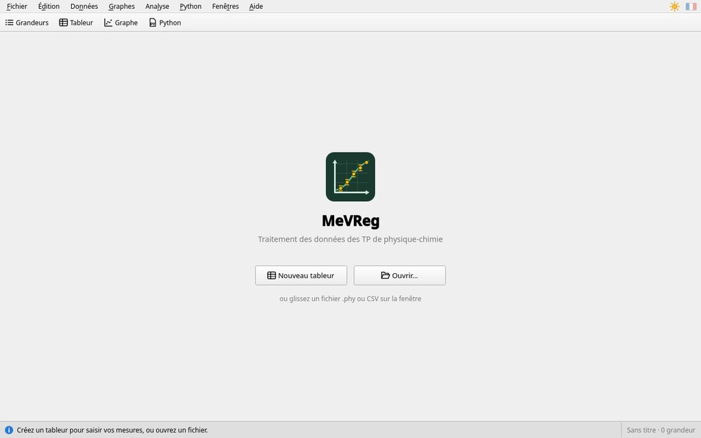
- Nouveau tableur : un tableur vide, pour saisir vos mesures.
- Ouvrir… (ou Ctrl+O) : un document MeVReg
(
.phy), donné par votre professeur ou enregistré lors d'une séance, ou un fichier de mesures.csv(partie 5). - Vous pouvez aussi glisser le fichier sur la fenêtre.
Un document .phy contient tout : les grandeurs, les formules, les tableurs, les
graphes, les modèles, les scripts et la place des fenêtres.
Un document avec des scripts Python

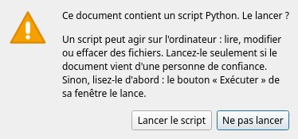
Un script Python peut agir sur l'ordinateur : lire, modifier ou effacer des fichiers. Quand un document reçu en contient, MeVReg demande s'il faut les lancer :
- Lancer le script (ou Lancer les scripts) : seulement si le document vient de votre professeur ou d'une personne de confiance. Ce document ne posera plus la question.
- Ne pas lancer (le choix par défaut) : rien ne se lance. Vous pouvez lire le script dans sa fenêtre, puis le lancer par son bouton Exécuter.
Un document que vous avez enregistré vous-même sur ce poste lance ses scripts sans question.
4. Saisir des mesures

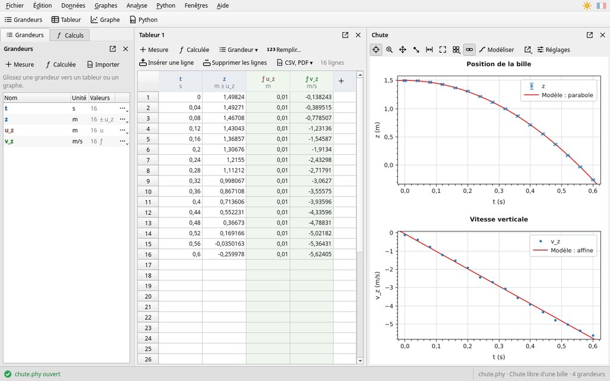
- Créez les grandeurs. Bouton Mesure du tableur (ou un
clic sur la colonne +, à droite) : donnez le nom et l'unité, par exemple
tets, puis Créer. - Tapez les valeurs : cliquez dans une case, tapez le nombre ;
Entrée valide et descend, Tab passe à droite. La virgule et le point sont
acceptés :
1,5ou1.5. Pour 2,5 × 10⁻³, tapez2,5e-3. - Vérifiez : ce qui n'est pas un nombre est refusé, et la barre d'état le signale en rouge.
Gagner du temps
- Copier-coller depuis un autre tableur (LibreOffice, Excel…) :
Ctrl+C puis Ctrl+V. Avec une ligne d'en-tête comme
t (s), les grandeurs sont créées avec leur nom et leur unité. Une case qui n'est pas un nombre reste vide, et la barre d'état le signale. - Remplir… : une suite de valeurs dans la colonne choisie, par exemple de 0 à 10 par pas de 0,5.
- Insérer une ligne, Supprimer les lignes : au-dessus du curseur, ou les lignes sélectionnées.
- Clic droit sur un en-tête : nom, unité, incertitude, tri, statistiques, tracé en fonction de la première colonne. Double-clic : nom, unité et formule.
- Largeur des colonnes : glissez le bord droit d'un en-tête (la flèche ↔ apparaît) ; les autres colonnes se partagent le reste. Double-clic sur ce bord : toutes les colonnes reprennent la même largeur.
Une grandeur, plusieurs fenêtres. Une même grandeur peut figurer dans plusieurs tableurs et plusieurs graphes : changer une valeur la change partout. Pour l'ajouter à un tableur : bouton Grandeur ▾ du tableur, ou glissez-la depuis la fenêtre Grandeurs. Retirer du tableur (clic droit sur l'en-tête) ne la supprime pas.
5. Importer un fichier CSV
Les interfaces d'acquisition, les tableurs et les téléphones (applications de mesure) exportent leurs mesures en CSV : un fichier texte, une ligne par mesure. Menu Fichier › Importer un fichier CSV…, bouton Importer de la fenêtre Grandeurs, ou glissez le fichier sur la fenêtre.

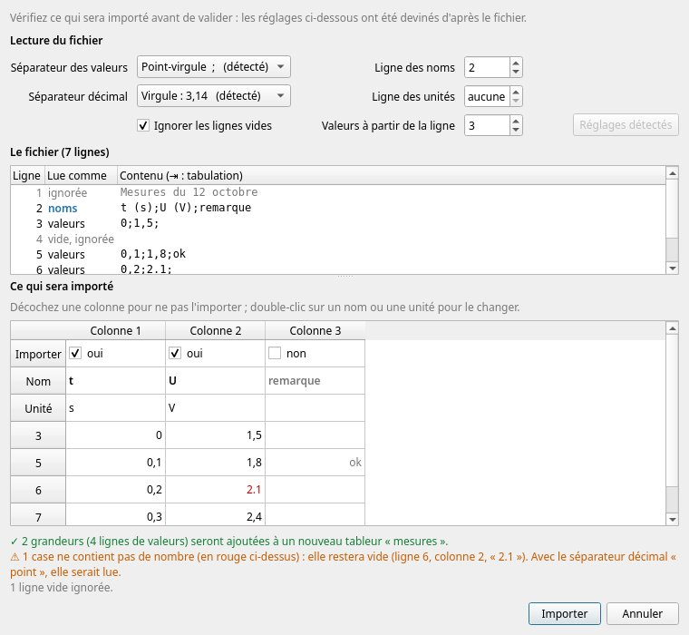
MeVReg montre ce qu'il va importer avant de le faire :
- le séparateur des valeurs (point-virgule, virgule, tabulation…) et le séparateur décimal (virgule ou point), devinés mais modifiables ;
- la ligne des noms, celle des unités s'il y en a une, et la première ligne de valeurs ; l'option d'ignorer les lignes vides ;
- l'aperçu : une colonne par grandeur, à cocher ou non, avec son nom et son unité (double-clic pour les changer) ;
- un résumé qui signale les problèmes : case illisible, nombre écrit avec l'autre séparateur décimal, ligne trop courte…
Vérifiez l'aperçu, puis Importer. Réglages détectés revient aux réglages devinés.
6. Calculer une grandeur
Une grandeur calculée est donnée par une formule ; elle est recalculée dès qu'une mesure change. Ses colonnes sont vertes, marquées ƒ.
- Bouton Calculée du tableur ou de la fenêtre Grandeurs.
- Donnez le nom, l'unité et la formule, par exemple
Ec,Jet0.5*m*v^2, puis Créer. Les nombres décimaux s'écrivent avec un point ou une virgule :0.5ou0,5.
Autre façon : l'onglet Calculs, rubrique Grandeurs calculées :
tapez Ec = 0.5*m*v^2 puis Entrée.
| Écriture | Sens |
|---|---|
+ - * /, ^ | opérations, puissance (v^2) |
sqrt(x), abs(x), exp(x), ln(x), log(x) | racine carrée, valeur absolue, exponentielle, logarithmes népérien et décimal |
sin(x), cos(x), tan(x), rad(x), deg(x) | trigonométrie (en radians), conversions des angles |
deriv(y, x) | dérivée de y par rapport à x : v = deriv(x, t) |
integ(y, x) | primitive de y, nulle au premier point |
mean(x), std(x), min(x), max(x), sum(x) | moyenne, écart-type, minimum, maximum, somme |
Dans min(a, b), max(a, b), deriv(y, x) et
integ(y, x), la virgule sépare les deux arguments. La liste complète des fonctions est
dans l'onglet Calculs (Fonctions disponibles).
Un paramètre est une constante (masse, g, k…) utilisable dans les formules : menu Données › Nouveau paramètre…, ou Paramètre de l'onglet Calculs. Un curseur change sa valeur, et tout est recalculé aussitôt.
Renommer une grandeur met à jour toutes les formules qui l'utilisent.
7. Incertitudes
L'incertitude-type d'une grandeur est une autre grandeur, placée à sa droite dans le tableur :
u_z pour z.
- Clic droit sur l'en-tête de la grandeur › Incertitude… (ou bouton ⋯ de la grandeur › Incertitude › Nouvelle incertitude…).
- Écrivez une valeur, la même pour toutes les mesures (
0.01), ou une formule qui dépend de la mesure, puis Créer.

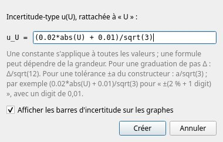
- Lecture sur une graduation de pas Δ (règle, éprouvette…) :
Δ/sqrt(12). - Tolérance ±a du constructeur :
a/sqrt(3); par exemple(0.02*abs(U) + 0.01)/sqrt(3)pour ±(2 % + 1 digit), avec un digit de 0,01. - Sur les graphes, les points ont alors leurs barres d'incertitude. Les réglages de la courbe (partie 8) choisissent Barres verticales, Barres verticales et horizontales ou Rectangles.
- Une incertitude différente de chaque côté : créez une grandeur pour chaque côté, puis, dans les réglages de la courbe, cochez une grandeur pour chaque côté et choisissez-les (y vers le haut, y vers le bas…).
- Le réticule accroché à un point donne sa valeur avec son incertitude, arrondie à la même décimale : U = (5,04 ± 0,07) V.
8. Tracer un graphe
- Graphe, en haut, crée un graphe vide.
- Glissez l'en-tête de la colonne des abscisses (par exemple
t) du tableur sur le graphe, puis celle des ordonnées (z). Les grandeurs de la fenêtre Grandeurs se glissent de la même façon.
Plus vite : sélectionnez plusieurs colonnes (Ctrl + clic sur leurs en-têtes) et glissez-les ensemble ; la colonne la plus à gauche donne les abscisses, les autres les ordonnées. Ou bien : menu Graphes › Nouveau graphe y(x), ou clic droit sur un en-tête › Tracer en fonction de la 1re colonne.

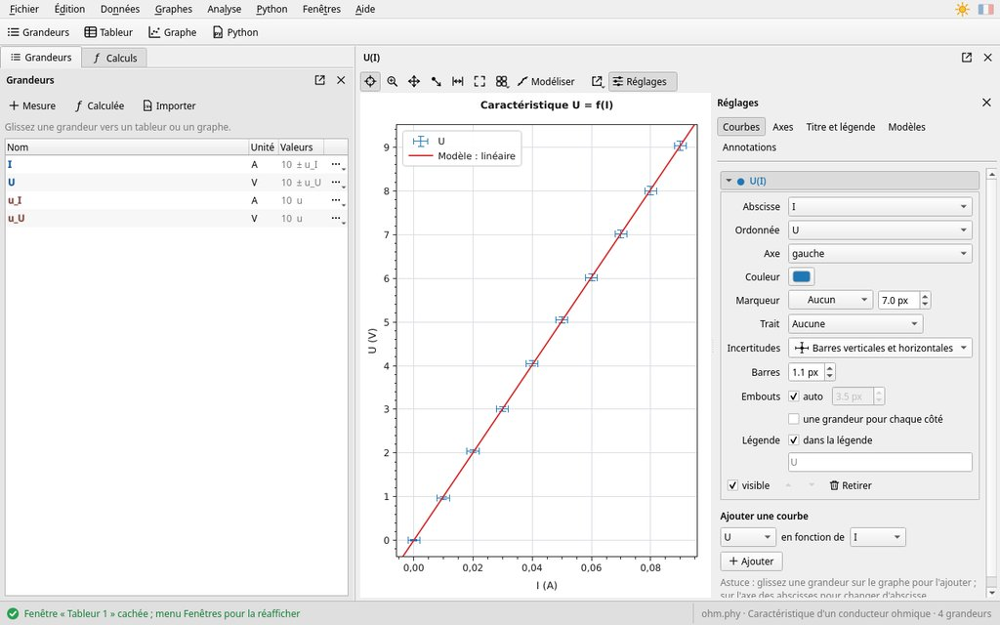
Lire et zoomer
- Réticule (outil par défaut) : il donne les coordonnées sous la souris, et s'accroche au point de mesure le plus proche.
- Molette : zoom autour de la souris (Maj : abscisses seules, Alt : ordonnées seules). Outil zoom : tracez un rectangle.
- Se déplacer : glisser avec le réticule ou l'outil main ; bouton du milieu.
- Double-clic dans le graphe : échelle automatique.
L'outil Glisser les points de mesure change les mesures elles-mêmes (dans le tableur aussi). Ctrl+Z annule un point déplacé par erreur.
Régler
Réglages ouvre, à droite du graphe, les onglets Courbes, Axes, Titre et légende, Modèles et Annotations ; le ✕ les ferme. Double-cliquer sur un axe, le titre ou la légende ouvre le bon onglet. Plusieurs graphes dans une fenêtre : bouton grille de la barre du graphe.
Droites et textes
Clic droit sur le graphe › Ajouter ici : droite verticale, horizontale, oblique, ou texte. Cliquez une droite ou un texte pour le sélectionner, puis glissez-le ; les poignées (les ronds) d'une droite oblique changent sa pente, et l'onglet Annotations donne son équation. Le cadenas (clic droit, ou onglet Annotations) évite de les déplacer par erreur ; Suppr supprime l'annotation sélectionnée.
9. Modéliser
Modéliser, c'est chercher la fonction qui passe au plus près des points, et ses paramètres.

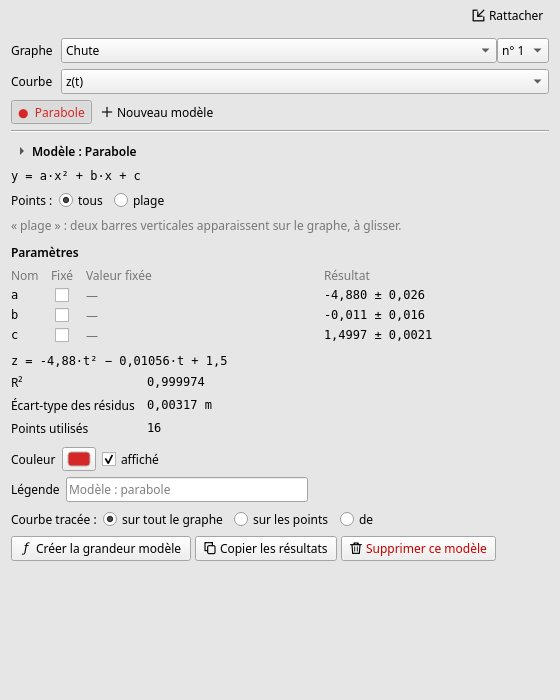
- Bouton Modéliser du graphe : la fenêtre Modélisation s'ouvre à part, à côté de la fenêtre principale.
- Choisissez la courbe, puis un modèle (Nouveau modèle et une vignette) : affine, linéaire, parabole, exponentielle, charge ou décharge d'un condensateur, sinus, sinus amorti, puissance… Le modèle est ajusté et tracé aussitôt.
- Lisez les paramètres et leur incertitude-type, l'équation et R² (plus il est proche de 1, mieux le modèle décrit les points).
- Points : tous, ou une plage : deux barres verticales apparaissent sur le graphe ; glissez-les pour choisir les points utilisés.
- Courbe tracée : sur tout le graphe (elle se prolonge avant et après les points, et suit le zoom), sur les points, ou de … à … (barres en pointillés, à glisser sur le graphe).
- Légende : le nom du modèle sur le graphe. Fixé : impose la valeur d'un paramètre.
- Créer la grandeur modèle ajoute les valeurs du modèle au document ; Copier les résultats les copie pour un compte rendu.
- Modèle à écrire soi-même (Utilisateur) : par exemple
a*t^2 + b, avec la variable de l'axe des abscisses.
10. Dosages et autres analyses
Méthode des tangentes
Elle repère l'équivalence d'un dosage sur la courbe pH = f(V).
- Tracez la courbe pH(V) (partie 8).
- Menu Analyse › Méthode des tangentes… (ou clic droit sur le graphe) : choisissez le graphe et la courbe, puis Tracer sur le graphe.
- Deux tangentes parallèles et la droite au milieu (en pointillés) apparaissent. Glissez un point de contact (rond vert) le long de la courbe pour placer les tangentes sur les parties arrondies, avant et après le saut de pH.
- Lisez l'équivalence E, à la rencontre de la courbe et de la droite du milieu : son volume et son pH sont écrits sur le graphe.
- Clic droit › Verrouiller les tangentes : elles ne bougent plus par erreur.

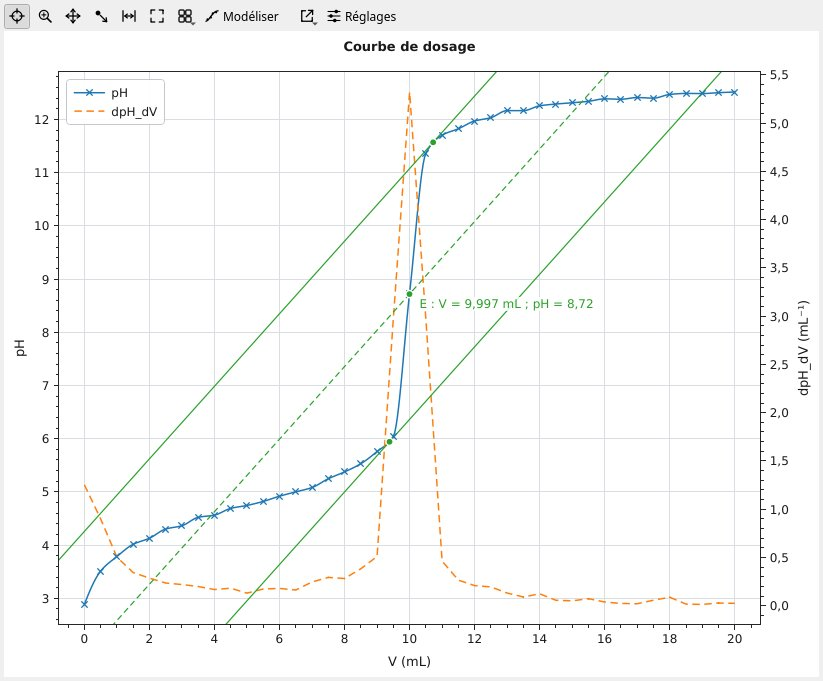
Analyse › Méthode de la dérivée… calcule la dérivée du pH, la trace sur l'axe de droite et marque l'équivalence, au maximum de la dérivée, par une droite verticale. La méthode des tangentes se règle aussi dans l'onglet Modèles des réglages du graphe (couleur, cadenas, suppression).
Autres analyses
Menu Analyse :
- Statistiques d'une série de mesures répétées : moyenne, écart-type, incertitude-type (type A) et histogramme.
- Dérivée…, Dérivée seconde…, Intégrale… : une nouvelle grandeur calculée.
- Spectre (analyse de Fourier)… : les fréquences présentes dans un signal.
11. Enregistrer, exporter, imprimer
- Enregistrer : Ctrl+S, un document
.phy. Ctrl+Z annule la dernière modification, Ctrl+Y la rétablit. - Compte rendu : Fichier › Compte rendu du TP en PDF… (tableurs, calculs, graphes, modèles, scripts), ou Imprimer le compte rendu… Le titre, les noms et la classe se donnent dans Fichier › Informations du TP…
- Image d'un graphe : bouton d'export du graphe (ou clic droit) : copier l'image, PNG, SVG, PDF, imprimer.
- CSV : Fichier › Exporter toutes les grandeurs en CSV…, ou CSV, PDF ▾ du tableur › Exporter le tableur en CSV… Les réglages proposés conviennent aux tableurs en français (Excel, LibreOffice).
- Python : Fichier › Exporter vers Python (Capytale)… (partie 15).

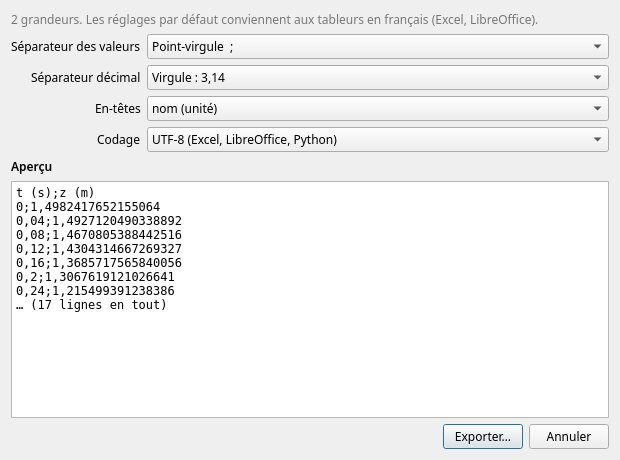
12. Ranger les fenêtres
- Déplacer : glissez la barre de titre d'une fenêtre ; des repères montrent où elle se placera (à côté, dessous, ou en onglet avec une autre).
- Détacher : le bouton Détacher de la barre de titre (une flèche qui sort d'un carré) met la fenêtre à part, avec son propre cadre : pratique avec deux écrans. Son bouton Rattacher la remet dans la fenêtre principale.
- Fermer : ✕. Pour un tableur, un graphe ou un script, MeVReg demande s'il faut le cacher (il reste dans le document : menu Fenêtres pour le réafficher) ou le fermer (il est supprimé du document, mais les grandeurs restent ; Ctrl+Z le rend). Les fenêtres Grandeurs, Calculs, Modélisation et Statistiques sont simplement cachées.

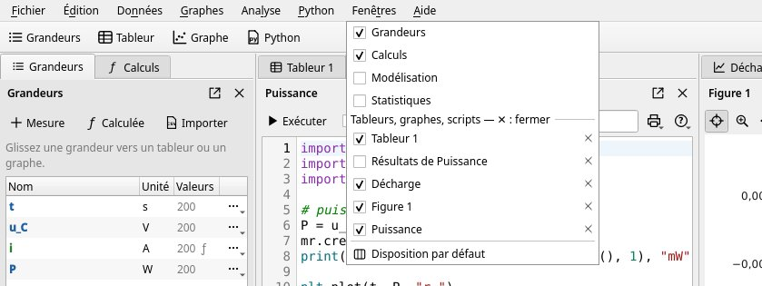
Le menu Fenêtres donne toutes les fenêtres du document :
- un clic sur une fenêtre affichée (cochée) la cache ; un clic sur une fenêtre cachée la réaffiche ;
- le ✕ d'un tableur, d'un graphe ou d'un script le ferme sans question : il est supprimé du document (Ctrl+Z le rend) ;
- Disposition par défaut range tout ; Rattacher les fenêtres détachées les remet toutes dans la fenêtre principale.
13. Souris et clavier
| Action | Geste |
|---|---|
| Valider une valeur et descendre | Entrée |
| Valider une valeur et passer à droite | Tab |
| Copier, coller (tableur) | Ctrl+C, Ctrl+V |
| Effacer les cases sélectionnées | Suppr |
| Tracer des colonnes | glisser leurs en-têtes sur un graphe |
| Zoomer (graphe) | molette ; Maj : abscisses, Alt : ordonnées |
| Échelle automatique | double-clic dans le graphe |
| Régler un axe, le titre, la légende | double-clic dessus |
| Ajouter une droite ou un texte | clic droit sur le graphe › Ajouter ici |
| Supprimer la droite ou le texte sélectionné | Suppr |
| Annuler, rétablir | Ctrl+Z, Ctrl+Y |
| Nouveau, ouvrir, enregistrer | Ctrl+N, Ctrl+O, Ctrl+S |
| Exécuter un script Python | F5 ou Ctrl+Entrée |
| Agrandir ou réduire les textes | Ctrl++, Ctrl+− ; Ctrl+0 : taille normale |
| Ouvrir cette notice | F1, ou Aide › Notice d'utilisation… |
14. En cas de problème
- Une formule est marquée d'un triangle rouge.
- Elle contient une erreur : laissez la souris sur le triangle, la bulle dit laquelle (nom inconnu, parenthèse manquante…).
- Le graphe est vide, ou les points sont hors de vue.
- Double-cliquez dans le graphe : l'échelle s'ajuste aux données. S'il n'y a aucune courbe, glissez-y des colonnes du tableur.
- Des mesures ont changé toutes seules.
- L'outil Glisser les points de mesure du graphe était peut-être choisi : Ctrl+Z annule, puis reprenez le réticule.
- Le modèle ne passe pas par les points.
- Vérifiez la courbe choisie et la plage de points. Essayez un autre modèle, ou fixez la valeur d'un paramètre.
- L'import CSV donne des valeurs fausses.
- Vérifiez dans l'aperçu le séparateur décimal (virgule ou point) et la première ligne de valeurs.
- Une fenêtre a disparu.
- Elle est cachée : menu Fenêtres, cliquez sur son nom. Disposition par défaut range toutes les fenêtres.
- MeVReg demande s'il faut lancer des scripts Python.
- Le document reçu en contient : voir la partie 3.
- Les textes sont devenus énormes (ou minuscules).
- Ctrl+0 rétablit la taille normale.
- Une modification est une erreur.
- Ctrl+Z l'annule, même la fermeture d'un tableur ou d'un graphe.
Pour les professeurs
Python intégré, préparation d'un TP, installation et configuration.
15. Python dans MeVReg
MeVReg contient Python : aucune installation n'est nécessaire. Python,
en haut, ouvre un nouveau script ; Exécuter (F5) le lance,
Arrêter l'interrompt (boucle trop longue). La console affiche les
print et les erreurs, avec le numéro de la ligne.

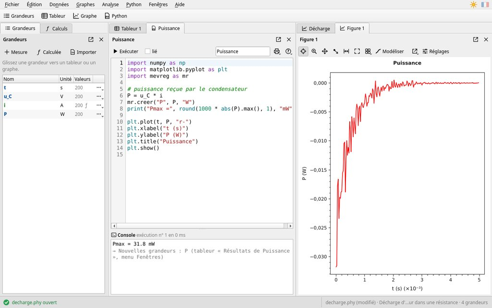
- Les grandeurs du document sont des tableaux numpy, à leur nom
(
t,u_C…) ; les paramètres sont des nombres. - Une liste ou un tableau créé dans le script devient une grandeur (sans unité) ;
mr.creer("P", P, "W")lui donne une unité. Les grandeurs créées vont dans le tableur « Résultats de … » du script (menu Fenêtres). - Les figures matplotlib (
plt.plot,plt.show…) deviennent des graphes de MeVReg, modifiables à la souris. - Le module
mevreg(import mevreg as mr) pilote tout le logiciel : grandeurs, tableurs, graphes, modélisation, tangentes, fenêtres, fichiers. - Script lié (case lié) : relancé dès qu'une grandeur ou un paramètre qu'il utilise change.
- Menu Python › Exemples : un exemple court pour chaque usage (grandeurs, graphes, modélisation, fenêtres et fichiers, divers), à copier et adapter. Python › Exécuter tous les scripts les relance tous.
- Document reçu : ses scripts ne se lancent qu'avec l'accord de l'utilisateur (partie 3).
Les fonctions disponibles de numpy, matplotlib et pandas, et toutes celles du module
mevreg avec leurs paramètres, sont dans la référence Python.
Capytale. Fichier › Exporter vers Python (Capytale)…
écrit un script numpy + matplotlib qui refait les données, les calculs et les graphes (incertitudes,
modèles, droites et tangentes compris). Les scripts du document qui utilisent mevreg ou
fenetre, propres à MeVReg, y sont mis en commentaire. Un script qui n'utilise que numpy,
matplotlib et pandas donne le même résultat dans Capytale.
16. Préparer un TP
- Préparez les grandeurs (noms, unités, incertitudes), les formules, les tableurs et les graphes,
puis Fichier › Enregistrer : le
.phy, distribué aux élèves, s'ouvre avec les mêmes fenêtres, à la même place. - Fichier › Informations du TP… : titre, noms des élèves, classe et notes, repris en tête du compte rendu PDF.
- Un script lié peut faire un calcul que les élèves ne voient pas (fenêtre cachée), ou tracer une figure qui suit leurs mesures.
- Document avec des scripts : à l'ouverture, chaque élève verra la question « Ce document contient un script Python. Le lancer ? ». Dites-leur de choisir Lancer le script ; avec Ne pas lancer, le choix par défaut, un script lié ne suit pas leurs mesures tant qu'ils ne l'ont pas lancé.
- Le module
fenetredessine en unités physiques (montages, figures de diffraction et d'interférences) : voir la référence Python.
17. Installer et configurer
Installation
- Windows, sans installation : MeVReg tient dans un dossier (archive
.zip), à copier sur le poste, le réseau du lycée ou une clé USB ; lancermevreg.exe. Python y est compris. Au premier lancement, Windows peut afficher « Windows a protégé votre ordinateur », car MeVReg n'est pas signé numériquement : « Informations complémentaires », puis « Exécuter quand même ». - Windows, installateur :
MeVReg-version-windows-x64-setup.exeinstalle MeVReg pour tous les utilisateurs dansProgram Files\MeVSuite, avec un raccourci dans le menu Démarrer ; il se désinstalle par les Paramètres de Windows. Déploiement sur un parc (WAPT, GPO) : options/VERYSILENT /SUPPRESSMSGBOXES /NORESTART. - Linux : paquet
.deb(Ubuntu, Debian),.rpm(Fedora), ou.AppImage, qui se lance sans installation (le rendre exécutable). - Documents
.phy: avec l'installateur Windows et les paquets.debet.rpm, un double clic sur un document l'ouvre dans MeVReg. - Vidéoprojecteur : Ctrl++ agrandit les textes et les graphes ; Ctrl+0 revient à la taille normale.
Préférences et réglages
Édition › Préférences… : graphes sur fond sombre avec le thème sombre, question « cacher ou fermer » avant de fermer un tableur, un graphe ou un script, chiffres significatifs des tableurs.
Au premier lancement, MeVReg prend le thème clair ou sombre du système. Il retient d'une séance
à l'autre le thème, les préférences, l'agrandissement des textes, les derniers fichiers, la taille
de la fenêtre et les documents dont les scripts ont été acceptés, dans un petit fichier texte
mevreg.ini, propre à chaque utilisateur ; le supprimer rétablit les valeurs par défaut.
Son chemin est affiché dans Aide › À propos de MeVReg…
| Système | Emplacement |
|---|---|
| Windows | %APPDATA%\MeVSuite\mevreg.ini |
| Linux | ~/.config/MeVSuite/mevreg.ini |
Les quatre logiciels de la suite (MeVPix, MeVCine, MeVReg, MeVSono) rangent leurs réglages dans
ce même dossier MeVSuite. La notice est écrite à chaque ouverture dans le dossier
temporaire du système (mevreg-help) : on peut l'imprimer ou l'enregistrer depuis le
navigateur.
18. Erreurs, contact et licence
Erreur imprévue : MeVReg affiche un message avant de se fermer et enregistre le
détail dans mevreg.log, dans le même dossier que mevreg.ini. Joignez ce
fichier à votre signalement.
Contact : Rémi MEVAERE, suite@sciences-physiques.net. Remarques, idées d'amélioration et problèmes sont les bienvenus.
Licence : MeVReg est un logiciel libre, distribué sous licence MIT ; il est écrit en C++ avec la bibliothèque libre Qt (licence LGPL version 3), et contient l'interpréteur Python (licence PSF). Les composants utilisés et leur licence sont indiqués dans Aide › À propos de MeVReg… ; Aide › À propos de Qt… donne la version de Qt et ses conditions de licence.